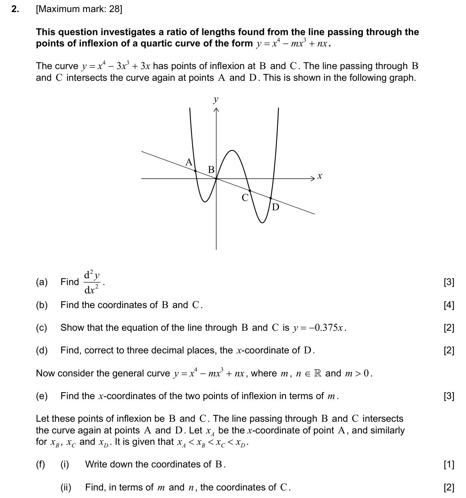
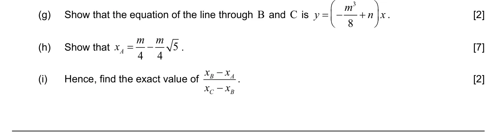
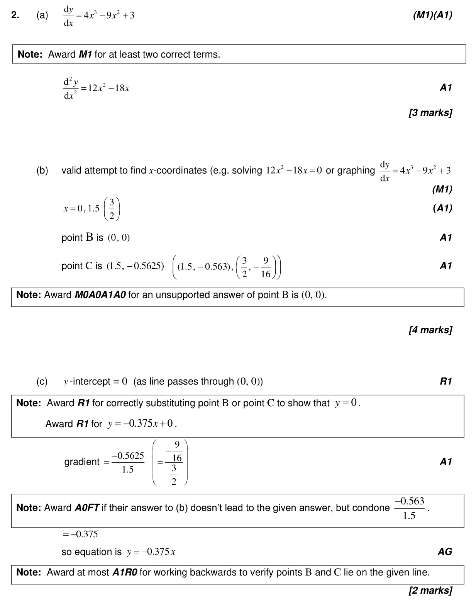
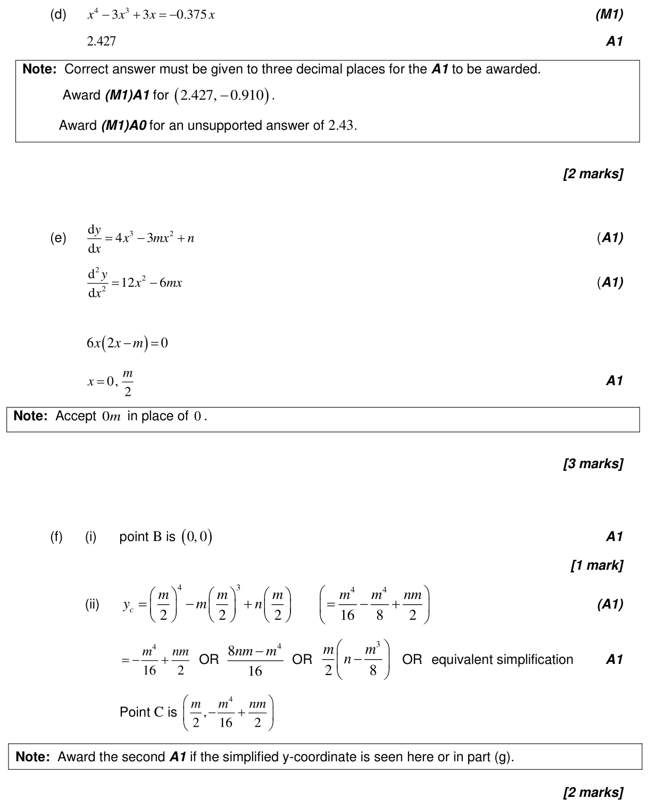
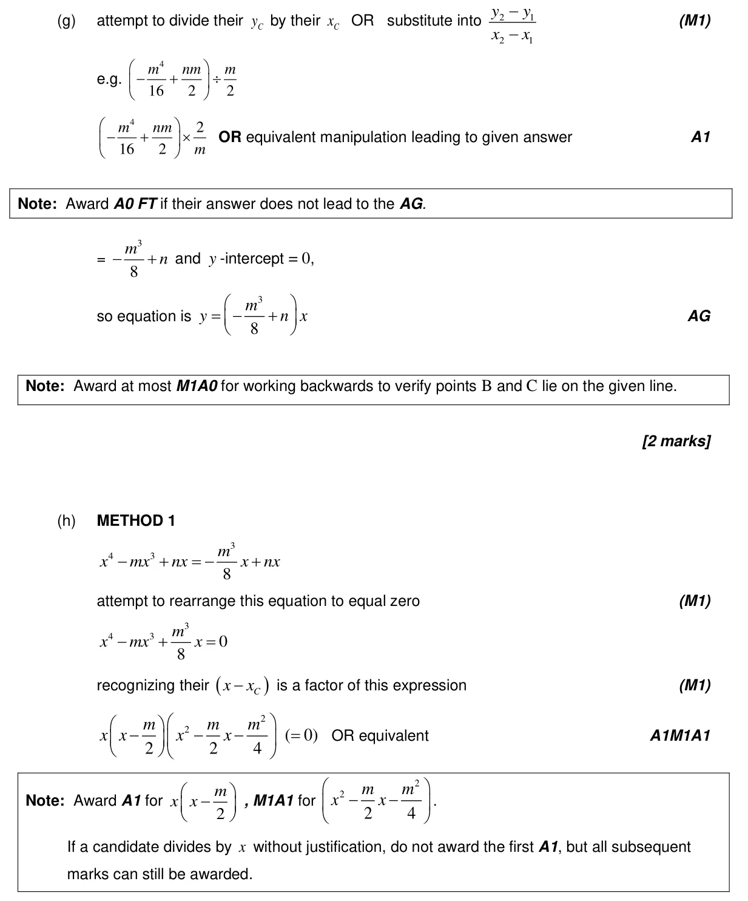
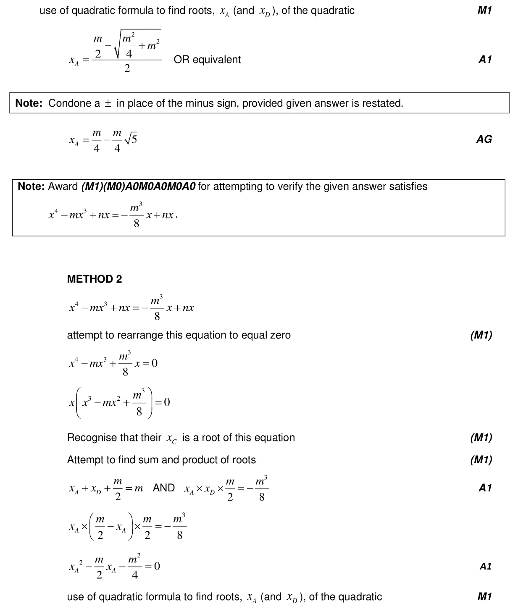
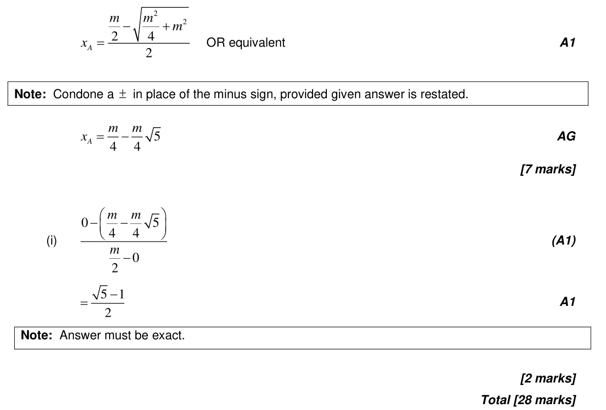

5.8 Optimization, local extrema and points of inflexion2.12 Polynomial functions: factor and remainder theorems, sum and product of roots2.1 Equations of straight lines, parallel and perpendicular2.7 Solutions of quadratic equations and inequalities, discriminant and nature of roots5.7 The second derivative2.4 Key features of graphs5.3 Differentiating polynomials, n in Z
Question


Markscheme




